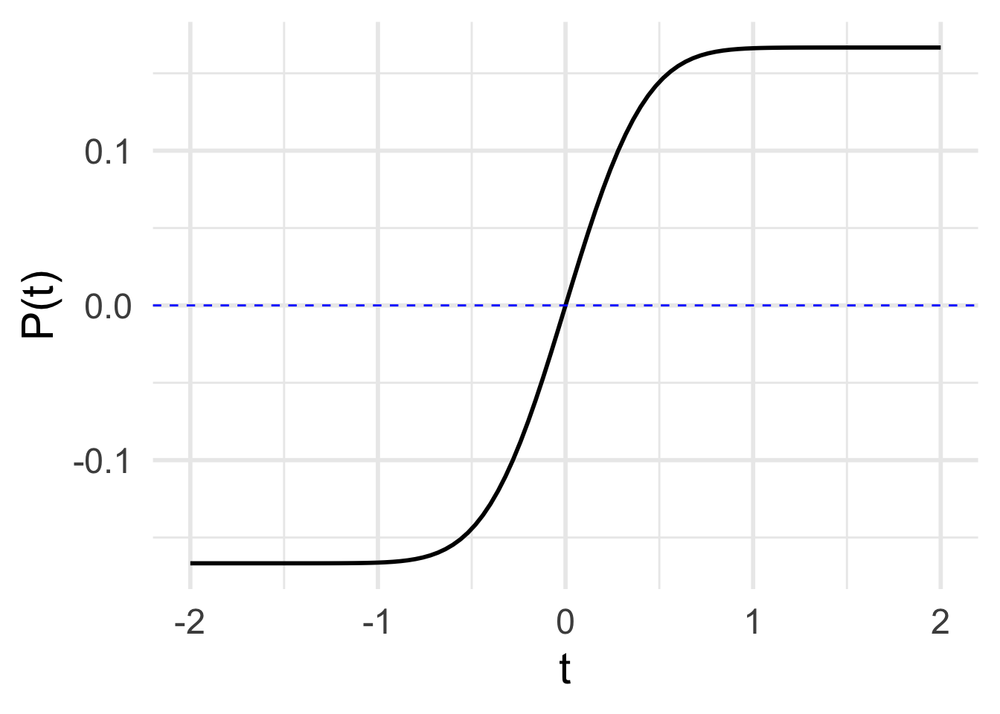

MOSAIC Week 15 Assignment
linear algebra
Remember to hand in your work …
At any point, you can submit your answers by collecting them and uploading them to the class site.
No answers yet collected
If the answers that have been loaded automatically are not yours, press this button before starting your work:
Fundamental theorem of calculus
Remember our conventions for notation:
- Fixed quantities (perhaps with units)
- Symbols: e.g. \(a\), \(b\), \(c\), \(x_0\), \(t^{\star}\)
- Examples: 3.2, 4.8 meters, 17 feet/sec\(^2\)
- Names of inputs to functions
- Symbols: e.g. \(x\), \(t\), \(y\), \(u\), \(v\)
- Examples: position, time, velocity
- Functions of an input
- Symbols: e.g. \(f(x)\), \(g(t)\), \(h(x, t)\)
- Examples: position as a function of time, density as a function of position
- Functions evaluated at a specific numerical input
- Symbols: e.g. \(f(a)\), \(g(t_0)\), \(h(x^{\star}, t^{\star})\)
- Examples: velocity at the finish line, starting position
In particular, take care to distinguish between these two kinds of symbolic items:
- \(f(x)\), which means \(f()\) as a function of \(x\)
- \(f(x_0)\), which means the function \(f()\) evaluated at the specific input \(x_0\), producing a quantity (e.g., 3.5 meters/sec.)
A major source of confusion for students is that \(a\) is a constant, even though we are not yet saying specifically which numerical value that constant has. Think of \(a\) as meaning “insert constant here.” In terms of derivatives …
- \(\partial_x f(a) = 0\)
- \(\partial_x f(x)\) is a function
- \(\partial_u f(x) = 0\), since \(u\) and \(x\) are different input names.
- \(\partial_u f(u)\) is a function, the exact same function as in (ii).
Exercise 1 With this in mind, turn to our three perspectives on a definite integral \[\large \int_{\color{brown}{a}}^{\color{brown}{b}} {\color{blue}{f(x)}}\, dx = {\color{magenta}{F(x)}}\left.{\LARGE\strut}\right|_{\color{brown}{a}}^{\color{brown}{b}} = {\color{magenta}{F}({\color{brown}{b}})} -{\color{magenta}{F}({\color{brown}{a}})}\]
- \(\color{brown}{a}\) and \(\color{brown}{b}\) are numerical constants
- \(\color{blue}{f}(x)\) and \(\color{magenta}{F}(x)\) are functions of \(x\)
- \(\color{magenta}{F}(\color{brown}{a})\) is the function \(\color{magenta}{F}()\) evaluated at the specific input \(\color{brown}{a}\), producing a quantity. Likewise \(\color{magenta}{F}(\color{brown}{b})\).
- Part 1.
- What kind of a thing is \(F(u)\), according to our notation convention? (Hint: First figure out what kind of thing is \(u,\) according to the notation conventions.)
first-fundamental-theorem-1
- Part 2.
- What kind of a thing is \(F(a)\), according to our notation convention?
first-fundamental-theorem-2
- Part 3.
- What kind of a thing is \(F(u) - F(a)\), according to our notation convention?
first-fundamental-theorem-3
- Part 4.
- According to our notation convention, what kind of a thing is \[\int_a^u f(x) dx \text{?}\]
first-fundamental-theorem-4
- Part 5.
- According to our notation convention, what kind of a thing is \[\int_u^b f(x) dx \text{?}\]
first-fundamental-theorem-5
- Part 6.
- According to our notation convention, what kind of a thing is \[\int_u^x f(x) dx \text{?}\]
first-fundamental-theorem-6
Exercise 2 Now turn to the entities involved in the so-called “First Fundamental Theorem of Calculus.” (“Fundamental theorem” is a highfalutin way of saying something like, “This isn’t obvious at first glance, and so you should be especially careful to memorize it so that you identify it when you see it.” Another way to state it is, “Every function is the derivative of some anti-derivative.” But you knew that already, since “every function has an anti-derivative.”)
Here are the entities involved, which you will recognize as a slight modification of a statement in Exercise 1:
\[\partial_u \int_a^u f(x)dx \ \ =\ \ \partial_u \left. F(x) \right|_a^u \ \ = \ \ \partial_u \left(F(u) - F(a)\right) .\] Let’s look at the right-most expression \(\partial_u \left(F(u) + F(a)\right)\) and exploit the the derivative of a sum is the sum of the derivatives. So … \[\partial_u \left(F(u) + F(a)\right) = \partial_u F(u) - \partial_u F(a) = \partial_u F(u)\]
- Part 1.
- Which of the following correctly justifies the step \[\partial_u F(u) - \partial_u F(a) = \partial_u F(u)\ \text{?}\]
fti-1
Taking the left-most and right-most expressions in the above equation, we have \[\partial_u \int_a^u f(x) dx = \partial_u F(u)\]
- Part 2.
- Is there an algebraic simplification of \(\partial_u F(u)\)?
fti-2
The equation \[\partial_u \int_a^u f(x) dx \ \ = \ \ f(u)\] means that “differentiation undoes integration” or, as we’ve been putting it, “differentiation undoes anti-differentiation.”
Drill
Exercise 3 As you know, \[\int_a^c f(x) dx = \int_a^b f(x) dx + \int_b^c f(x) dx\\ \text{and}\\\int_a^c f(x) dx = - \int_c^a f(x) dx\ .\]
Here are some definite integrals for which, without stating anything more about the function, we give you the numerical result.
| \(\int_{2}^{7} f(x) \,dx = -8\) | \(\int_{-6}^{-2} g(x) \,dx = 3\) |
| \(\int_{2}^{12} f(x) \,dx = -14\) | \(\int_{0}^{2} g(x) \,dx = 1\) |
| \(\int_{2}^{7} h(x) \,dx = 5\) | \(\int_{0}^{2} h(x) \,dx = 6\) |
Consider these the facts you have to work with when calculating the following definite integrals:
- Part 1.
- \[\int_{2}^{7} 3f(x) \,dx\]
calf-know-painting-1
- Part 2.
- \[\int_{7}^{12} f(x) \,dx\]
calf-know-painting-2
- Part 3.
- \[\int_{2}^{7} \left[f(x) + g(x)\right] \,dx \]
calf-know-painting-3
- Part 4.
- \[\int_{2}^{2} r(x) \,dx \]
calf-know-painting-4
- Part 5.
- \[\int_{-6}^{-2} \left[\strut g(x)+3\right] \,dx \]
calf-know-painting-5
- Part 6.
- \[\int_{12}^{7} f(x) \,dx\]
calf-know-painting-6
Exercise 4 Equation 1 shows three items, all of which are equivalent even though they look different. You can see this from the equal signs separating the three items.
\[\large \int_{\color{brown}{a}}^{\color{brown}{b}} {\color{blue}{f(x)}}\, dx = {\color{magenta}{F(x)}}\left.{\LARGE\strut}\right|_{\color{brown}{a}}^{\color{brown}{b}} = {\color{magenta}{F}({\color{brown}{b}})} -{\color{magenta}{F}({\color{brown}{a}})} \tag{1}\]
When you reach the point where you can say, “That’s obvious,” and can write down the three items from memory, you will have achieved an important facility with calculus.
- Part 1.
- Since the three items are equivalent, they are all the same kind of “thing.” What kind of thing are they?
three-perspectives-1
The equation has been written in color to help you identify elements that are the same in each of the three items.
- Part 2.
- Which of the colors stands for a bound of integration?
three-perspectives-2
- Part 3.
- Which of the colors stands for the derivative of a function that appears elsewhere in the equation?
three-perspectives-3
- Part 4.
- Which of the colors stands for an anti-derivative of a function that appears elsewhere in the equation?
three-perspectives-4
Exercise 5 The (so-called) “First Fundamental Theorem of Calculus” says:
\[\partial_t \int_a^t f(x) dx \ = \ f(t)\]
Consider this new quantity: \[\partial_t \int_t^a f(x) dx\] Which of the following is a valid simplification of the quantity?
u-on-the-bottom-1
Explanation
\(\partial_t \int_a^t f(x) dx\) is equivalent to \(\equiv F(t) - F(a)\), where \(F()\) is the anti-derivative of \(f()\).
Consequently, \[\partial_t \int_t^a f(x) dx \ \equiv F(a) - F(t) = -\left[F(t) - F(a)\right]\].
..id..
Exercise 6 Which of the following is NOT equivalent to \[\int_1^4\frac{1}{x}dx\ ?\]
ape-lie-coat-1
Answer
The power rule doesn’t apply to \[x^{-1}\], so \(\frac {x^0}{0}\) is not the anti-derivative of \(1/x\).
..id..
Exercise 7 Look at Figure 35.1 in MOSAIC Calculus
Notice that the zero-crossings of \(f()\) each are an argmax or argmin of the anti-derivative \(F()\). Explain why.
Answer
If we have a function \(F(t)\) and want to find the argmaxes or argmins, a procedure is to differentiate \(\partial_t F(t)\) and look for the zero crossings. If \(F()\) is the anti-derivative of \(f()\), then \(f()\) must be the derivative of \(F()\).
..id..
Exercise 8 Draw \(F(x) \equiv \int f(x) dx\)

Answer

..id..
Exercise 9 Draw \(F(t) \equiv \int f(t) dt\)


Answer

..id..
Exercise 10 Draw \(H(t) \equiv \int h(t) dx\)
Answer
..id..
Exercise 11 Draw \(P(t) \equiv \int p(t) dt\)

Answer

..id..
Exercise 12 Draw \(S(t) \equiv \int s(t) dt\)

Answer
..id..
Exercise 13 Draw \(G(x) \equiv \int g(x) dx\)


Answer
..id..
Exercise 14 Draw \(F(t) \equiv \int f(t) dt\)


Answer

..id..
Exercise 15 Draw \(g(t) \equiv \int g(t) dt\)

Answer

..id..
Exercise 16
- Part 1
- Simplify \(\int_{t}^{-t}1\ dt\)
Answer
The anti-derivative \(G(t) = \int 1 dt = t + C\). Evaluating \(G()\) at the limits of integration gives \[G(t) - G(-t) = t + C - \left[-t + C\right] - 2\,t\. \]
We have include the “constant of integration” \(C\) here for completeness, but when the calculation is going to involve \(G(upper) - G(lower)\), the constants of integration will always cancal out.
..id..
- Part 2
- \(\int_a^b 1 dx\)
Answer
The anti-derivative \(G(t) = \int 1 dx = x + C\). Evaluating \(G()\) at the limits of integration gives \(G(b) - G(a) = b + C - [a + C] = b - a\ .\)$
Again, we’ve put in the constant of integration C explicitly, but we’ll stop now since all the calculations below involve \(G(upper) - G(lower)\) where the constants of integration will cancel out. ..id..
- Part 3
- \(\int_0^x 3 t^2\ dt\)
Answer
Happily, we recognize the integrand, \(3 t^2\), as the derivative of the function \(t^3\). So \(G(t) = t^3\). (We’re leaving out the constant of integration \(C\) for the reason described in the previous answer blocks.)
Evaluating \(G()\) at the upper and lower limits of integration gives \[G(x) - G(0)\ .\]
..id..
- Part 4
- \(\int_a^b f(x)\ dx + \int_b^a f(y)\ dy\)
Answer
Some things to notice:
- The name of the with-respect-to variable doesn’t matter so the second integral is the same as the first integral but with the limits of integration flipped around.
- Even though we don’t know \(f(x)\), we can still make progress. Let’s call \(\int f(x) dx\) by the name \(F(x)\). We don’t know \(F()\) but we can still formally evaluate it at the limits of integration:
\[F(b) - F(a) - \left[F(b) - F(a)\right] = 0\ .\]
..id..
- Part 5
- \(\int_1^x \frac{1}{t}\ dt\)
Answer
With luck, you’ll recognize the function \(1/t\) as the derivative of \(\ln(t)\). Consequently, we know that \(G(t) \equiv \ln(t)\). (Again, leaving out the constant of integration since we have both lower and upper limits of integration.) Overall, the result: \[G(x) - G(1) = \ln(x) - \ln(1) = \ln(x)\ .\]
..id..
- Part 6
- \(\int_0^{t^2} \omega \cos(\omega t)\ dt\) -> \(\sin(\omega t^2)\)
Answer
How nice! \(\omega \cos(\omega t)\) is the derivative of the basic modeling function \(\sin(\omega t)\). Correspondingly, \(G(t) = \sin(\omega t)\). Evaluating at the limits of integration gives \[\sin(\omega t^2) - \sin(\omega 0) = \sin(\omega t^2)\ .\]
It may seem odd to have a limit of integration be a compound expresssion like \(t^2\), but any expression can serve as a limit of integration.
..id..
- Part 7
- \(\partial_x \int x \text{dnorm}(x)\ dx\)
Answer
There seems to be a pattern among these exercises: the integrands have been selected to give simple results since they are the derivatives of pattern-book functions.
Here, the integrand is the derivative of \(\text{dnorm}(x)\) so the anti-derivative is \(G(x) = \text{dnorm}(x)\). Taking the derivative \(\partial_x G(x)\) gives \(x \text{dnorm}(x)\).
Even simpler, we can recognize the \(\partial_x\) as undoing the \(\int f(x) dx\), so the result is just the integrand.
..id..
- Part 8
- \(\partial_t \int_0^x pnorm(x)\ dx\)
Answer
A trick here! We don’t actually know the anti-derivative of \(\text{pnorm}(x)\), but let’s just call it \(G()\) so the integral is \(G(x) - G(0)\). Neither of these is a function of \(t\), so the overall expression is simply zero.
..id..
- Part 9
- \(\int e^{a + bt}\ dt\)
Answer
Let’s re-write this with a simplified integrand:
\[\int e^{a + bt}\ dt = \int e^a e^{bt}\ dt = e^a \int e^{bt}\ dt\] Now \(e^{bt}\) isn’t the derivative of a pattern-book function, but it’s close! \(b e^{bt}\) is the derivative of \(e^{bt}\). The trick is to recognize that \(e^{bt} = \frac{b}{b} e^{bt}\) so
\[e^a \int e^{bt}\ dt = e^a \int \frac{b}{b} e^{bt}\ dt = \frac{e^a}{b} \int b e^{bt}\ dt = \frac{e^a}{b} e^{bt} = \frac{1}{b}e^{a + bt}\]
..id..
Return to linear algebra
Exercise 17 (Why \(n-1\) in the variance) In statistics, the variance of a column of numbers \(x\) is the mean of the “deviations” of the individual \(x_i\) from the overall mean \(\bar{x}\). Like this:
\[ \text{var}(x) \equiv \sum_{i=1}^n \frac{1}{n-1} (x_i - \bar{x})^2 \tag{2}\] Generations of students have been mystified by the \(n-1\) in Equation 2. One way to describe the reasoning is that subtracting the mean from a vector with \(n\) elements results in a vector that lives in an \(n-1\)-dimensional subspace.
Let’s explore this.
Create a random vector v as in the R chunk:
You could subtrace the mean using standard R operations, for instance v - mean(v). Do that in the above chunk and verify that the result indeed has a mean of zero. (Remember, computer round-off error might result in a value like 10-15 which can safely be treated as zero.)
We’re going to switch to a convenience function from the {mosaicCalc} package: M_map(). This takes a matrix or vector (a vector is a one-column matrix), and applies a function to each column of the matrix, returning the result as a matrix. The center function subtracts the mean of a vector from the vector itself. Likewise, unit calculates the unit-length vector while centerunit subtracts the mean and normalizes to zero length.
For example:
- Part 1.
-
Make a random matrix
Mthat has four rows and four or more columns. For instanceM <- values_mat(4, 6)orM <- rand_mat(4,7). Naturally, each vector inhabits a four-dimensional space. SinceMcontains more than four vectors, it’s highly likely that the random vectors in it will space all four dimensions. To make sure, we can look at the diagonal entries on the R matrix that results from QR decomposition. The statementdiag(qr.R(qr(M)))will show you the diagonal elements.
- How many non-zero diagonal elements are there in the R matrix?
diag-R-1a
- Find the diagonal entries of R for a submatrix of
Mwith just three columns. (You can use indexing to pull out the columns you want, e.g.M[ , c(2,4,3)].) How many non-zero diagonal elements are in the R matrix from the 3-column submatrix you made.
diag-R-1b
- Create a new matrix
uMthat contains the same vectors as the originalMbut normalized to zero length. How many non-zero diagonal elements of R are there?
diag-R-1c
- Part 2.
-
Create a new matrix
cMfrom your original M matrix that has each vector “centered,” that is, each vector has zero mean. Then find the number of non-zero elements on the diagonal of the R matrix constructed fromcM. How many are there?
diag-R-2
- Part 3.
- Here’s a brief explanation. In a “centered” matrix, that is, a matrix whose columns all have zero mean, any linear combination of the columns will likewise have zero mean. But not all vectors in the space spanned by non-centered M will have zero mean; the centering restricts the linear combinations to a sub-space that doesn’t include any vectors with non-zero mean.
Another way to look at this: in every centered vector each of the elements can be calculated from the other elements. It’s like there is a redundant element. Briefly explain how to calculate any element of a centered vector from the rest of the elements.